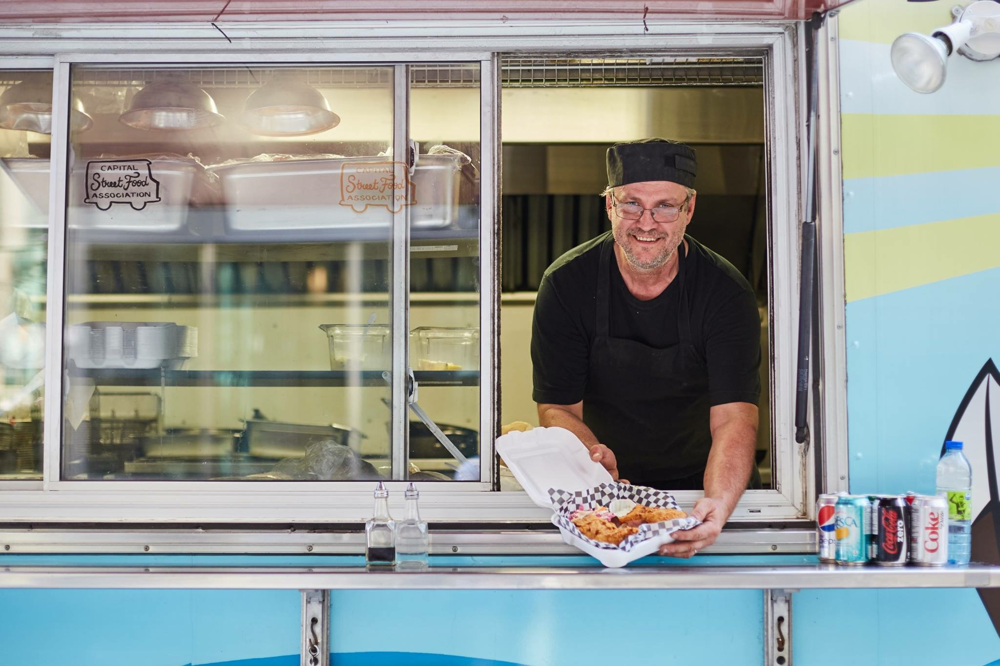

A taste of summer: Ottawa's food truck season in full swing
CTV's Tyler Fleming visits popular food trucks across Ottawa in a summer segment on the city's food-truck season.
Watch the segmentMedia
Read local coverage of Ad Mare, from interviews with the owner to English and French guides to Ottawa's street-food scene.
Features & interviews
CTV's Tyler Fleming visits popular food trucks across Ottawa in a summer segment on the city's food-truck season.
Watch the segment
Gerlie Ormelet's feature follows Mario Burke through the realities of operating a seafood truck in Ottawa's winter, from early fish runs to keeping the truck working in sub-zero weather.
Read the article
Dexter McMillan's article covers Ottawa's street-food program and includes Mario Burke as owner of Ad Mare and president of the Capital Street Food Association.
Read the article
Kerra Seay's report quotes Mario on running Ad Mare through a hard winter at Slater and O'Connor, including the extra maintenance and cold-weather challenges behind the counter.
Read the articleGuides & mentions

CTV News Ottawa's summer patio roundup covers outdoor dining, drinks, and people watching as patio season gets underway.
Read the guide
Ottawa Tourism's French street-food guide includes Ad Mare among the city's standout casual stops, calling out fish and chips, shrimp and fish tacos, lobster rolls, and key lime pie.
Lire l'article.jpg)
Das Lokal Ottawa includes Ad Mare in its fish-and-chips roundup, noting the truck's crisp batter and food-truck take on the classic.
Read the guide
Ottawa XPress lists Ad Mare Seafood under casual dining and street food, highlighting fresh, sustainable seafood and Canadian coastal flavours.
Read the guide
Guides Ulysse lists Ad Mare Mobile Seafood among its favourite Ottawa food trucks, highlighting lobster rolls, fish and chips, and fish tacos.
Lire l'articleKnow of another article, radio spot, video, or interview about Ad Mare? Send it our way and we can add it here.
Contact us